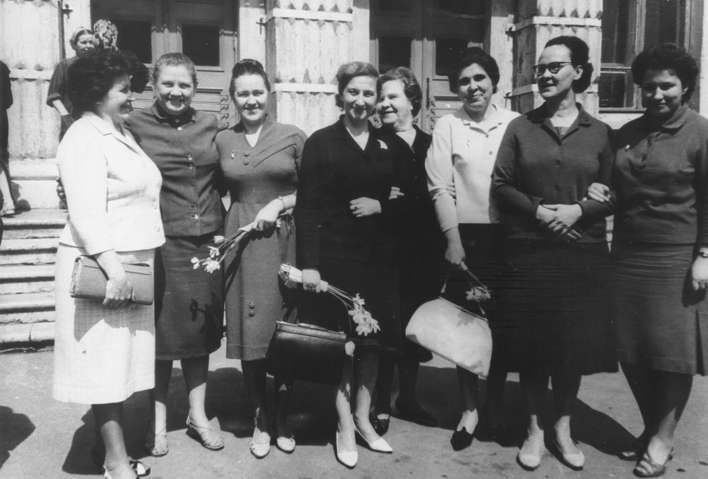
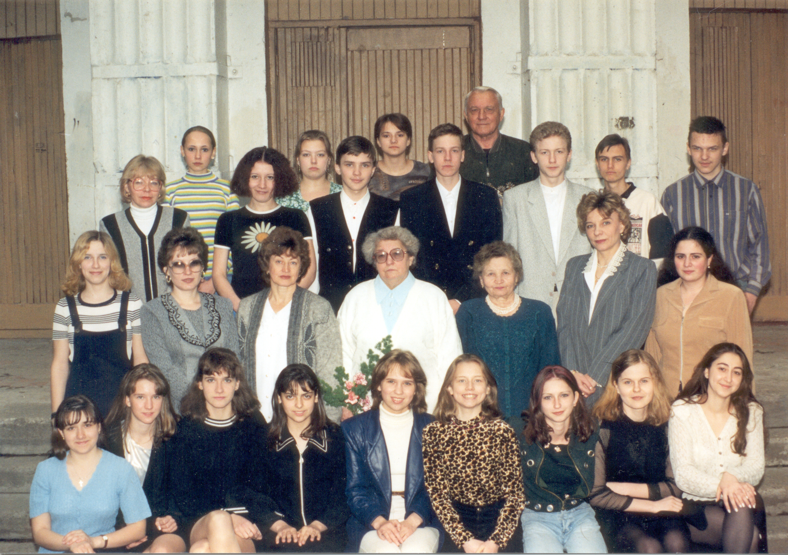

История школы

Добро пожаловать в раздел, который посвящён истории нашей школы.
Первый камень в фундамент здания будущей школы № 192 Октябрьского района города Москвы по строительному адресу Ленинский проспект, д.34-А был заложен в июне 1960 года. Здание строила бригада Героя Социалистического Труда Киреева. В августе 1960 г. здание было готово к началу учебного года. В ночь с 26 на 27 августа 1960 г. в Москве прошёл сильный ливень. Мягкая кровля школы не везде выдержала водяной поток и это помешало открыть школу вовремя. 1 сентября 1960 г. учащихся новой, 192 школы принимала школа № 10 (в её здании ныне располагается Медицинское училище № 5). И только 7 сентября 1960 года после небольшого ремонта здание 192 школы приняло своих первых учеников.
Первым директором школы была назначена Фимина Клавдия Ивановна — опытный педагог, до этого более 17 лет работавшая директором школы № 586 Ленинского района г. Москвы. Вместе с ней пришли в новую школу и её друзья-соратники: М. В. Шаронова, И. С. Орлова, супруги Троицкие, В. Ф. Дулина, В. М. Рыбакова, В. М. Гусев. За короткое время был создан крепкий коллектив единомышленников.

Шефами школы стали Институт химической физики им. Н. Н. Семёнова и Институт физических проблем им. П. Л. Капицы АН СССР.
Большое внимание в школе уделялось созданию предметных кабинетов, особенно по физике, химии и биологии. Непосредственную помощь в создании химических лабораторий оказал директор Института химической физики Николай Николаевич Семёнов, единственный советский лауреат Нобелевской премии по химии. При его личном участии были созданы и оборудованы химический кабинет, две химические лаборатории с лаборантскими и весовая комната. Благодаря этому в школе появилась возможность открыть классы с углублённым изучением химии. При личном участии Петра Леонидовича Капицы, директора Института физических проблем, лауреата Нобелевской премии, оснащён школьный кабинет физики. Шефы помогли создать столярную и слесарную мастерские, руководителем которых более 45 лет был Николай Семёнович Мамаев. Под руководством Георгия Алексеевича Троицкого был создан кабинет технических средств обучения — редкое явление для того времени. Школьная библиотека постепенно формировалась под руководством Лидии Алексеевны Баженковой.
20 мая 1965 г. в школе открыт музей «Героини Великой Отечественной войны» — первый и единственный в то время в СССР музей о подвиге женщин-фронтовиков. Ленточку перерезала Герой Советского Союза Наталия Фёдоровна Кравцова, знаменосец 46-го гвардейского женского авиационного полка, писательница.
Коллектив школы подвергся сильному изменению летом 2002 года, когда в него влился весь биолого-химический профиль лицея «Вторая школа» с ведущими преподавателями химии, биологии, физики, математики, информатики, русского языка и литературы, иностранного языка и более чем 120 учениками. Созданное ими новое лицейское отделение продолжило традиции Л2Ш. С этого времени около 1/3 списочного состава школы учится в лицейских классах.
Ниже приведена ссылка на работу об истории школы
из истории школы